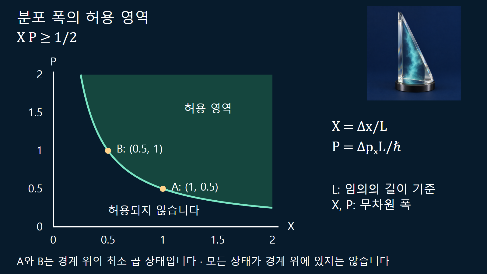
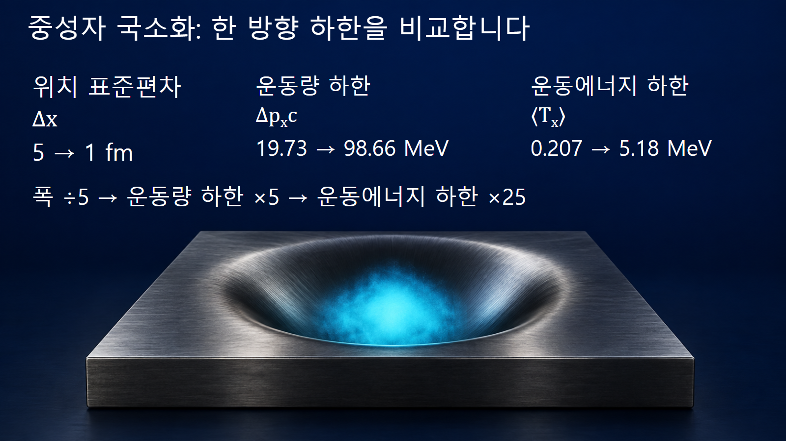

원자와 원자핵의 기초 · 020
불확정성원리
위치와 운동량 분포의 폭이 동시에 무한히 작아질 수 없는 양자적 한계
불확정성원리는 같은 양자상태의 위치 분포와 운동량 분포를 동시에 임의로 좁힐 수 없다는 관계입니다. 여기서 불확정성은 장비가 서툴러서 생긴 오차가 아니라 그 상태에서 얻는 측정값 분포의 표준편차입니다. 먼저 무엇의 분포를 비교하는지 정해야 식의 의미가 분명해집니다.
한 번의 오차보다 반복 준비한 상태의 분포를 봅니다
동일하게 준비한 입자들을 대상으로 위치를 여러 번 측정하면 위치 분포를 얻고, 별도로 같은 상태를 준비해 운동량을 측정하면 운동량 분포를 얻습니다. 각 분포의 평균에서 얼마나 퍼져 있는지를 표준편차 Δx와 Δpx로 나타냅니다. 이는 입자 하나의 위치를 재고 곧바로 운동량을 재는 절차의 오차를 단순히 곱한 값과 같지 않습니다. 장비 잡음과 측정 교란은 실제 실험에서 따로 평가할 문제입니다.
식의 오른쪽은 h가 아니라 ℏ/2입니다
한 방향의 위치와 그 방향 운동량에는 Δx·Δpx≥ℏ/2가 성립합니다. [1] ℏ=h/(2π)이며 약 1.05457×10−34 J·s입니다. 위치의 단위 m와 운동량의 단위 kg·m/s를 곱하면 kg·m2/s로, J·s와 같습니다. Δx를 좁힐수록 허용되는 Δpx의 하한이 커집니다. 등호는 특정한 최소 불확정성 상태에서 달성할 수 있으며, 일반적인 상태의 곱이 언제나 정확히 ℏ/2인 것은 아닙니다.
또한 x와 px가 짝을 이룬다는 점이 중요합니다. x의 분포와 다른 방향 py의 분포에 이 식을 그대로 대입하지 않습니다. 폭을 표준편차 대신 반치폭이나 슬릿의 기하학적 너비로 정의하면 숫자 계수가 달라질 수 있어 정의를 함께 적어야 합니다.
위치 폭이 1 nm인 전자의 계산 예시
전자 상태의 위치 표준편차를 Δx=1.0 nm=1.0×10−9 m로 정하면 Δpx≥ℏ/(2Δx)≈5.27×10−26 kg·m/s입니다. 비상대론적 전자에서 Δvx=Δpx/me이므로 속도 성분의 표준편차 하한은 약 5.79×104 m/s입니다. 이것은 평균 속도나 입자가 반드시 그 속도로 움직인다는 명령이 아닙니다. 평균 운동량이 0인 상태에서도 분포 폭은 0이 아닐 수 있습니다.
같은 방식으로 Δx를 0.5 nm로 줄이면 Δpx의 하한은 두 배가 됩니다. 하지만 이전 상태의 실제 운동량 폭이 이미 하한보다 훨씬 컸다면, 새 상태의 실제 폭이 반드시 정확히 두 배라고 결론짓지는 않습니다. 원리는 허용 범위를 제한하며 상태 준비의 모든 결과를 하나로 정하지 않습니다.

파동묶음을 좁히려면 운동량 성분이 더 필요합니다
운동량이 한 값으로 정해진 이상적인 평면파는 위치 공간 전체에 퍼져 있습니다. 특정 구간에 모인 파동묶음을 만들려면 여러 파수 성분을 중첩해야 합니다. p=ℏk이므로 파수의 분포 폭은 운동량의 분포 폭과 연결됩니다. 적절한 가우스 파동묶음은 최소 곱을 달성하는 대표적인 예입니다. 자유롭게 전파되거나 위치·운동량 상관이 생긴 가우스 상태까지 언제나 같은 최소 곱을 유지한다고 단정하지는 않습니다.
핵 크기로 국소화할 때 생기는 운동량 척도
중성자의 한 방향 위치 표준편차를 5 fm로 둔 교육용 추정을 생각합니다. ℏc≈197.327 MeV·fm를 쓰면 Δpxc≥197.327/(2×5)≈19.73 MeV입니다. 중성자 정지질량에너지 mnc2≈939.565 MeV를 사용하고 평균 px가 0이면, 그 방향 운동에너지 기대값은 ⟨Tx⟩=Δpx2/(2mn)≥0.207 MeV입니다. 이 계산은 한 방향 성분의 비상대론적 하한입니다.
Δx=1 fm로 더 좁히면 Δpxc의 하한은 약 98.66 MeV, 같은 방향 운동에너지 하한은 약 5.18 MeV가 됩니다. 위치 폭이 5분의 1이 될 때 운동량 하한은 다섯 배, 그 운동에너지 하한은 스물다섯 배가 되는 검산입니다. 실제 원자핵에서는 핵력 퍼텐셜, 세 방향의 운동, 파울리 원리와 다체 상관이 추가됩니다. 이 숫자를 실제 핵자의 평균 총운동에너지나 결합에너지로 그대로 제시하지 않습니다.

슬릿 너비·표준편차·측정오차를 구분합니다
| 폭 또는 오차 | 뜻 | 그대로 대체할 수 없는 이유 |
|---|---|---|
| Δx, Δpx | 동일 상태의 측정 분포 표준편차 | 상태의 통계적 성질입니다 |
| 슬릿 너비 | 장치의 기하학적 개구 폭 | 파동함수와 분포 모양이 추가로 필요합니다 |
| 검출기 분해능 | 측정값을 구별하는 장치 성능 | 상태 폭과 장비 응답을 구분해야 합니다 |
| 반치폭 | 피크 절반 높이에서의 너비 | 표준편차와의 환산은 분포 형태에 달려 있습니다 |
예를 들어 정규 확률분포의 반치폭은 약 2.355배의 표준편차입니다. 그래프의 봉우리가 같은 너비로 보인다는 인상만으로 Δ값을 읽기보다 축 단위와 폭의 정의를 확인합니다. 이상적인 날카로운 경계에서는 운동량 분포의 꼬리도 중요하므로 슬릿 폭을 무조건 Δx라고 놓는 계산은 신중해야 합니다.
에너지·시간 관계를 에너지 차용으로 설명하지 않습니다
에너지 폭과 상태 변화의 시간 척도를 연결하는 관계도 있지만, 그 시간은 위치처럼 같은 방식의 관측 연산자로 항상 취급되는 변수가 아닙니다. 핵준위의 수명과 선폭을 다룰 때에는 어떤 수명과 어떤 선폭을 정의했는지를 명확히 해야 합니다. 불확정성원리를 근거로 짧은 시간 동안 에너지 보존을 마음대로 어길 수 있다고 설명하지 않습니다. 위치·운동량 분포의 부등식과 다른 문제를 한 줄 비유로 섞으면 적용 조건을 잃습니다.
하한 추정의 역할과 한계
불확정성원리는 좁은 공간에 국소화된 상태가 운동량 폭을 피할 수 없다는 사실을 정량적으로 보여 줍니다. 위 두 계산은 전자 규모와 핵 규모에서 하한을 비교한 예시입니다. 실제 상태의 에너지와 분포를 얻으려면 퍼텐셜과 경계조건을 정해 양자역학 문제를 풀어야 합니다. 부등식은 그 해가 만족해야 할 조건이자 계산 결과를 검산하는 기준으로 사용합니다.